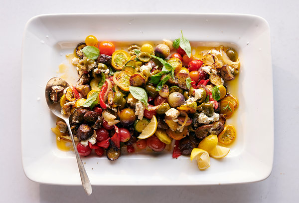

Home
Sheet Pan Ratatouille

This simple baked Ratatouille is the perfect recipe for all those beautiful farmers market veggies showing up in the next month or two, and I seriously can’t wait for you to make this! It’s so easy, it’s healthy (totally vegan!) and roasting the veggies really boosts the flavor!. The best part? You can make a big batch of Ratatouille on a Sunday, then serve it up 3 different ways during the workweek – over pasta, over polenta and over toast! A great meal prep idea!. It’s so yummy, you won’t tire of it. This version takes 15 minutes of hands-on time before it goes into the oven to roast. You could even freeze this for winter!
Ingredients:
- 1 large eggplant, cut into 1/2-inch cubes
- 2 zucchinis, cut into 1/2-inch slices
- 2 heirloom tomatoes, cut in wedges
- 1 white onion, cut into 1/2-inch-thick rounds
- 1 red bell pepper, cut into 1/2-inch strips
- 4 cloves garlic
- 2 tablespoons olive oil
- 2 tablespoons chopped fresh rosemary
- 1 teaspoon salt
- ½ teaspoon ground black pepper
- 1 tablespoon balsamic vinegar
Steps:
- Preheat oven to 400 degrees F (200 degrees C). Line a baking sheet with parchment paper.
- Place eggplant, zucchinis, tomatoes, onion, bell pepper, and garlic in a single layer on the prepared baking sheet. Drizzle with olive oil, rosemary, salt, and pepper; toss vegetables until well coated.
- Roast in the preheated oven until slightly tender; about 20 minutes. Mix and roast for another 12 minutes. Reduce heat to 300 degrees F (150 degrees C) and cook until vegetables begin to caramelize; about 10 minutes. Drizzle with balsamic vinegar.